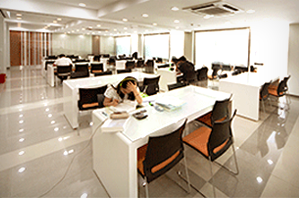
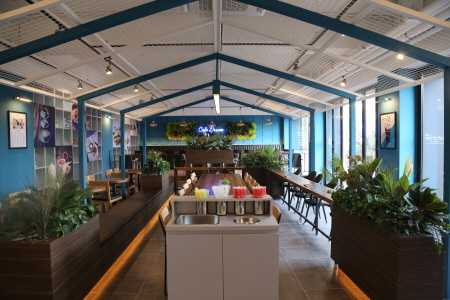

우리의 시설
부천대학교의 유용한 모든 시설들

몽당 도서관
부천대학교 본교 & 소사캠퍼스

축구장
부천대학교 본교 & 소사캠퍼스

카페
부천대학교 본교 & 소사캠퍼스
부천대학교(富川大學校, Bucheon University)는 1958년에 설립된 대한민국의 사립 전문대학이다.부천대라는 약칭으로 많이 불린다.
경기도 부천시 심곡동의 본캠퍼스와 부천시 계수동에 위치한 캠퍼스인 소사캠퍼스, 우즈베키스탄에 위치한 Bucheon University in Tashkent가 있다.
많은 학생들을 위해 많은 복지와 편의 시설을 제공합니다.
학생들이 수업을 받고자 하는 모든 교과목은 수강신청을 하여야만 강의를 들을 수 있으며 학점취득이 가능하다. 따라서 매학기 강의시간표에 따라 정해진 기간 내에 본인이 수강하여야 할 과목과 학점을 수강신청 하여야 한다.
시험은 매학기 2회이상 실시하며 수강신청을 한 학생은 3/4이상 출석하여야 응시할 수 있다. 매학기 학업성적표는 학기말에 학생에게 배부되며, 성적에 이의가 있는 학생은 소정의 절차에 따라 이의 신청을 할 수 있다.
교양교과는 졸업학점 기준으로 10%이상(2년제-8학점이상, 3년제-12학점이상)을 이수해야한다. 대리 수강신청은 불허하며, 대리 수강신청으로 발생한 불이익은 학생 본인이 감수하여야 한다.
전문 교과는 학과별로 개설되어 있는 전문교과중 전공필수를 제외한 교과목이며, 해당 전공분야를 좀더 폭 넓게 공부할 수 있도록 개설되어 있는 교과로
본인 임의로 선택하여 이수할 수 있다. 단, 타학과에 개설된 전문교과목은 학년에 관계없이 이수할 수 없다.
부천대학교의 캠퍼스를 소개합니다.
부천대학교의 유용한 모든 시설들
부천대학교 본교 & 소사캠퍼스
부천대학교 본교 & 소사캠퍼스
부천대학교 본교 & 소사캠퍼스
학생복지 및 대학 정책을 제안하는 학생 커뮤니티
스크린 쿼터(screen quota)제는 극장 경영자가 극장의 연간 상영 일수 가운데 일정 비율 이상은 반드시 한국 영화를 상영하도록 강제하는 ‘자국 영화 의무 상영 제도’를 말한다. 이는 외국 영화 의 지나친 시장 잠식을 방지하고 동시에 자국 영화의 시장 확보가 용이하도록 함으로써, 자국 영화의 보호와 육성을 의무화하기 위한 제도다.
비건은 하나의 가치관으로서 ‘비거니즘(Veganism)’ 이라는 신조어로 불릴 만큼 삶의 전반에 깊이 관여하고 있다. 채식 혹은 채식주의를 생각하면 무엇이 생각날까? 고기를 먹지 않고 채소를 먹는 것이라고 여러 사람들이 생각 할 것이다. 채소만 먹는 것부터 시작해 달걀이나 우유는 먹거나, 생선이나 닭고기까지는 먹는 여러 종류의 채식이 있다.